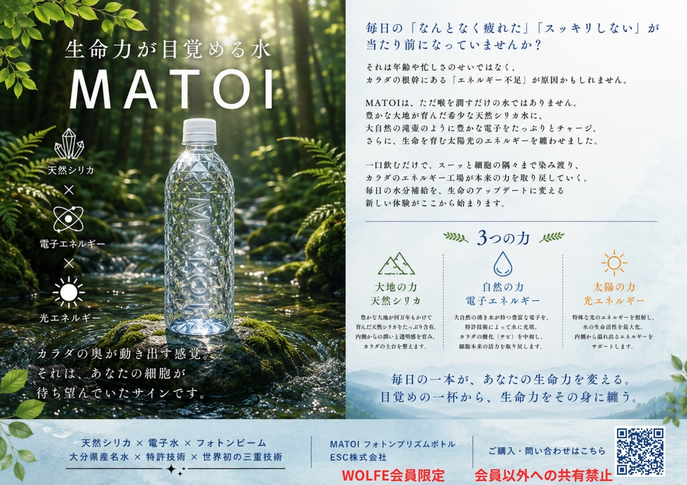
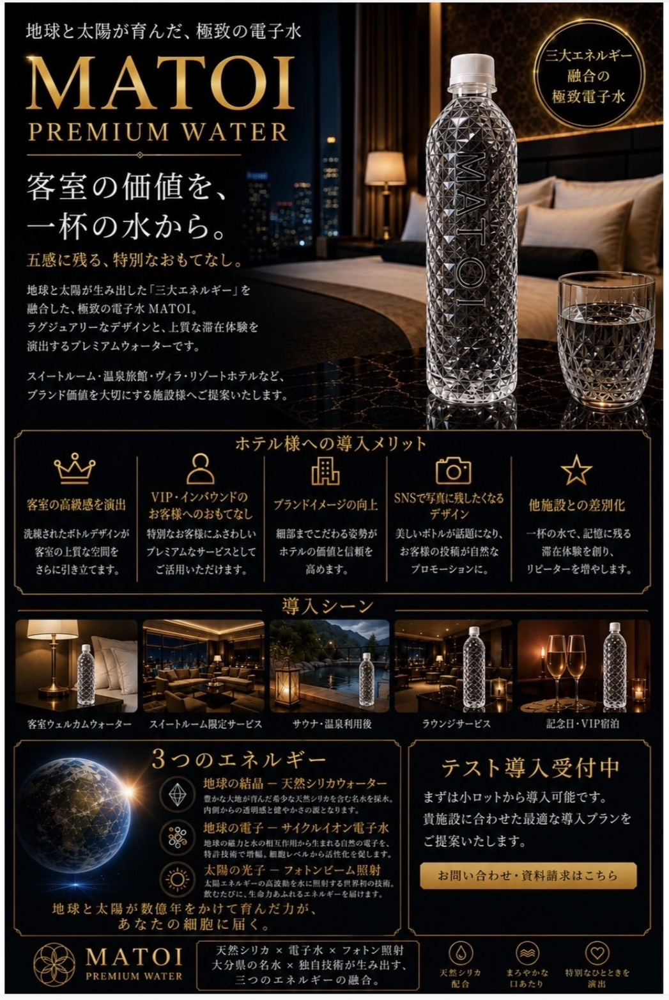
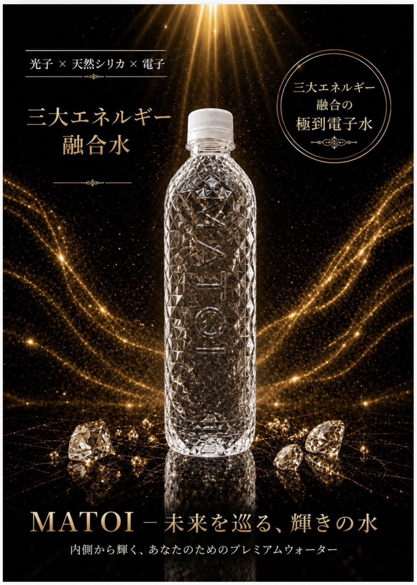

MATOI（水）
まずはブランドコンセプト、次に導入イメージ、最後にビジュアル訴求の順で確認できるようにしています。
1. MATOIとは
天然シリカ、電子エネルギー、光エネルギーという3つの力をキーワードにしたコンセプト紹介です。まずは全体像をここで確認してください。

2. 導入提案・活用イメージ
ホテルやラウンジ、VIP向けのおもてなしなど、商材としての活用イメージをまとめた資料です。提案時の見せ方として活用できます。

3. ブランドビジュアル
黒×金を基調にした、MATOIの印象を強く伝えるビジュアルです。ブランドイメージを伝える補助資料として使えます。
